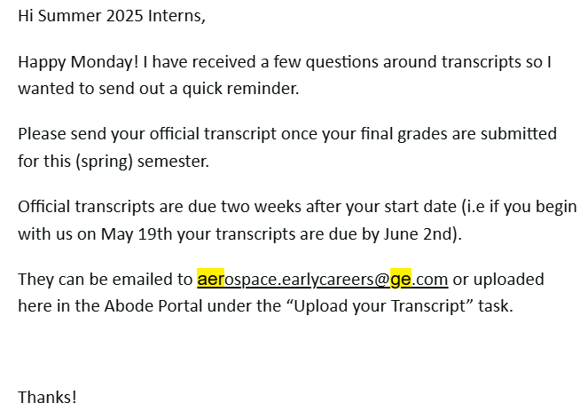

Professional Communication in the Aerospace Industry
This portfolio draws from my Communication Research Report (CRR), which examined how GE Aerospace's internal and external communication strategies affect workplace culture, safety, diversity, and credibility. Understanding these strategies is essential not just for current employees but also for students and professionals entering similar technical environments. The lessons here offer actionable techniques that help navigate and succeed in such high-stakes industries.
Email Communication
Follow-Up Emails
Follow-ups are essential at GE Aerospace, where complex projects often involve multiple checkpoints and stakeholders. These emails maintain accountability and keep timelines transparent.
Greet professionally
Reference previous conversation
Politely ask for a status update
Close with appreciation and a signature
Subject: Following Up on Project Timeline
Hello [Name],
I hope you're well. I wanted to follow up on our last discussion regarding the project deliverables. Do you have an update on the revised schedule?
Best regards,
[Your Name]
Mass Emails
Mass emails communicate announcements or deliverables to broad internal teams. These should be clear and respect privacy boundaries.
Use a clear subject line
Keep message brief
Use BCC for privacy
Include relevant attachments

Screenshot: Sample mass email shared during onboarding week.
Confirmation Emails
Confirmations ensure all parties are aligned on meetings or deliverables. At GE, such communication reinforces efficiency and reduces missteps.
Greet recipient
Confirm specific details
Add final comments if needed
Subject: Re: Meeting Schedule
Hi [Name],
Confirming I’ll be there at 2 PM on Thursday. Looking forward to it!
Best,
[Your Name]
Request Emails
Clarity in requests avoids errors in engineering roles. Emails must include sufficient context while being concise and polite.
State request clearly
Provide background
Be polite
Offer follow-up availability
Subject: Request for Project Files
Hi [Name],
Would you be able to send over the final design files for the [Project Name]? I’m finalizing the documentation today and want to ensure it’s accurate.
Thanks in advance!
[Your Name]
Interview Communication
Before the Interview
This section covers preparation for technical job interviews at GE Aerospace and similar companies. These interviews typically evaluate your engineering skills, your understanding of the industry, and how well you communicate under pressure.
Research recent aerospace projects using GE’s press page or LinkedIn
Review the job description and align your experiences using the STAR method (Situation, Task, Action, Result)
Prepare 2–3 anecdotes that highlight teamwork, problem-solving, and leadership in technical contexts
During the Interview
Technical job interviews simulate real-world challenges and collaborative problem-solving. Clear communication here demonstrates your readiness to join high-performance engineering teams.
Maintain confident, professional body language (especially in virtual interviews)
Answer using structured examples, especially for behavioral and technical questions
Ask specific questions about team structure, project timelines, or technology stacks
After the Interview
Post-interview communication helps reinforce your interest and allows you to reflect on your performance.
Send a thoughtful, personalized thank-you email within 24 hours
Note which questions were most challenging and use them to prepare for future interviews
Team Meeting Communication
Weekly Project Sync Summaries
Meetings are a staple of technical environments. Sending summaries afterward keeps accountability and supports distributed teams.
Subject: Summary – 4/1 Project Sync (Scrum Team Alpha)
Hi team,
Here’s a quick recap of today’s meeting:
- John will update the sensor firmware by Friday
- I’ll complete the design validation write-up
- Sara is reviewing test data from last week’s run
Next sync: Monday @ 10 AM
Best,
Andrew
Understanding and Communicating about NDAs at GE Aerospace
Purpose
Uphold GE Aerospace’s commitment to protecting intellectual property, proprietary systems, and sensitive project information through responsible workplace communication.
Step-by-Step Guidelines
Understand GE’s NDA Scope: NDAs at GE Aerospace often cover cutting-edge engine technologies, system architecture, internal testing protocols, supplier relationships, and government-contracted work. Review onboarding materials or ask your mentor/team lead for clarity.
Respect Boundaries in Conversations: Avoid discussing project-specific data, tools, or timelines—even in casual conversations, external meetings, or networking events.
Handle Questions with Care: Maintain professionalism and avoid revealing confidential content when asked about restricted work.
Sample Response
“Due to the nature of our work under a non-disclosure agreement, I can’t share specifics, but I’d be happy to talk about the kind of engineering challenges I’ve tackled and general areas I support within the team.”
Guidelines for GE Aerospace Interns and Engineers
Check with Your Supervisor: When unsure about disclosure boundaries—whether in a presentation, meeting, or email—always ask your supervisor or GE legal.
Avoid Public Disclosure: Refrain from posting photos of workspaces, test benches, CAD models, or identifiable project components on social media.
Secure Communications: Never forward internal emails or technical documents outside GE systems. Avoid using personal devices for company files unless explicitly approved and secured.
Justification Summary
These instructional moments reflect real scenarios at GE Aerospace where technical communication intersects with legal boundaries. Navigating NDA-covered work builds trust, reinforces compliance, and cultivates professional maturity—skills essential for long-term success in aerospace and defense engineering.